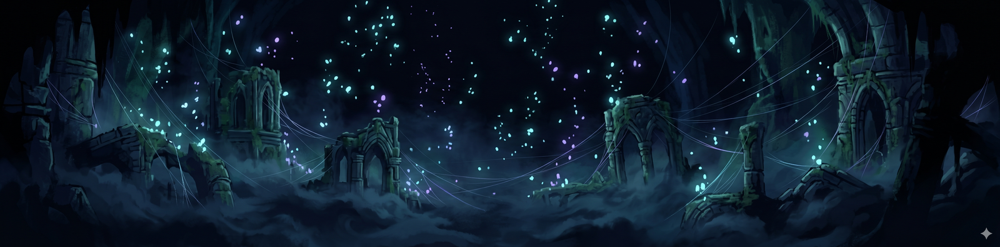
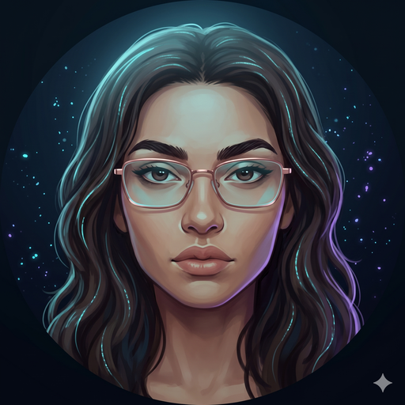

◆ hallownest ◆SUPPLY CHAIN · DATA · IA APLICADA
scrollFaço perguntas que os sistemas ainda não sabem responder. Depois, construo as ferramentas para respondê-las.
Comecei em compras hospitalares e aprendi cedo que negociar é só a superfície. O que realmente importa é entender o sistema por trás: o fluxo, a dependência, o momento certo de mover. Essa leitura de cadeia me acompanha em tudo que faço.
BCTec pela UNIFEI e Assistente de Planejamento (PCM) na Prática Produtos S.A., unindo bagagem em Supply Chain a uma trajetória crescente em dados e IA aplicada: de KNN implementado do zero em NumPy a dashboards que transformam dados brutos em decisão.
Não escolho entre intuição e análise: uso as duas. Sistemas complexos, padrões invisíveis e movimentos precisos em terreno desconhecido. É assim que eu trabalho, tanto em Supply Chain quanto em código.

Modelo de K-Nearest Neighbors aplicado a dados reais da PETR4 via yfinance, com padronização (StandardScaler) e painel interativo em ipywidgets para classificar tendências do ativo.
Implementação 100% em NumPy do K-Nearest Neighbors, sem scikit-learn: validação cruzada 3-fold e matriz de confusão construídas do zero. 99,12% de acurácia no EMNIST filtrado.
Painel interativo em Streamlit + Plotly analisando o impacto da IA no desempenho de estudantes: gráficos de linha, barra, dispersão e pizza, com filtros dinâmicos e deploy via túnel Cloudflare.
Pipeline de NLP não supervisionado: TF-IDF + K-Means com validação por Cotovelo e Silhouette Score para descobrir os tópicos ocultos em notícias em português.
Chuveiro inteligente IoT: desenvolvimento de produto completo mais simulador em Python de consumo, economia e payback que quantifica a proposta de valor.
Framework autoral de otimização de fluxo integrado (PCM, Compras e Engenharia) e cases reais de compras com reduções de 10% a 55% em custos. Onde dados viram decisão operacional.
Classificação de sentimento em 10.000 avaliações reais da B2W/Americanas com regressão logística e CountVectorizer — 89,9% de acurácia, superando o baseline léxico.
Os projetos acima são a vitrine. Aqui está todo o resto — 22 notebooks de ML, dashboards, algoritmos implementados do zero e a base interdisciplinar do BCTec. Nada em rascunho, nada omitido: cada linha abre código real no GitHub.
redes-neurais-mlp-credit-defaultMLP com GridSearchCV sobre inadimplência de cartão (UCI) · F1-macro 0,67ver no GitHub →classificacao-acoes-embr3-knnO ancestral do PETR4: alta/baixa da EMBR3 com KNN, nascido na disciplinaver no GitHub →exercicios-iaBusca em grafos, separadores lineares e agrupamento hierárquicover no GitHub →busca-ucs-bfs-dfs-romeniaUCS, BFS e DFS com heapq, deque e pilha — o mapa clássico de Russell & Norvigver no GitHub →regressao-linear-populacao-pouso-alegreMínimos quadrados na mão sobre a população da minha cidadever no GitHub →knn-do-zero-validacao-cruzadaO terceiro da série está na vitrine: KNN em NumPy puro · 99,12% no EMNISTver no GitHub →pi3-dashboard-vagas-linkedinMineração de vagas do LinkedIn: hard skills, soft skills e ferramentasver no GitHub →dashboard-saude-academicaHoras de estudo × nota, ansiedade em provas, sono e extracurricularesver no GitHub →dashboard-habitos-estudantesEDA interativa com seleção dinâmica de variáveisver no GitHub →bd-consultas-sql-ideb12 consultas sobre a base do IDEB: filtros, agregações e subqueriesver no GitHub →bd-mysql-campeonatoModelagem com chave estrangeira: partidas + estatísticas por intervalover no GitHub →calcnum-raizes-sistemas-integracaoPonto fixo, Newton-Raphson e bisseção · Jacobi vs. Seidel · trapézios vs. Simpsonver no GitHub →calcnum-rk4-euler-eletricasRunge-Kutta 4ª ordem vs. Euler + diagramas de fluxo de potência (BCTEC022)ver no GitHub →ciencias-eletricasCircuitos, Lei de Ohm, potencial elétrico e resistênciaver no GitHub →fisica-mecanicaEstática: diagramas de corpo livre, cabos, apoios, reações e momentover no GitHub →fisica-m4p1-motor-gasolinaCoeficiente politrópico por busca aleatória convergente + consumover no GitHub →fisica-m4p2-onibus-arrastoArrasto aerodinâmico e potências combinadas de um double-deckerver no GitHub →quimica-curva-calibracao-faasCurva de calibração para ferro por FAAS: regressão, R² e mg/kgver no GitHub →graficos-parabolas-interativoFamílias de parábolas com entrada interativa de coeficientesver no GitHub →fundamentos-python-01O primeiro programa em Python — abril de 2024, o ponto de partidaver no GitHub →fundamentos-python-02Lógica e estruturas de dadosver no GitHub →fundamentos-python-03Funções e composiçãover no GitHub →progcdados-arquivos-pandasArquivos txt/csv e as primeiras análises com pandasver no GitHub →Aberta a projetos em dados, supply chain e IA aplicada. Se a referência fez sentido, você já entende como eu penso.